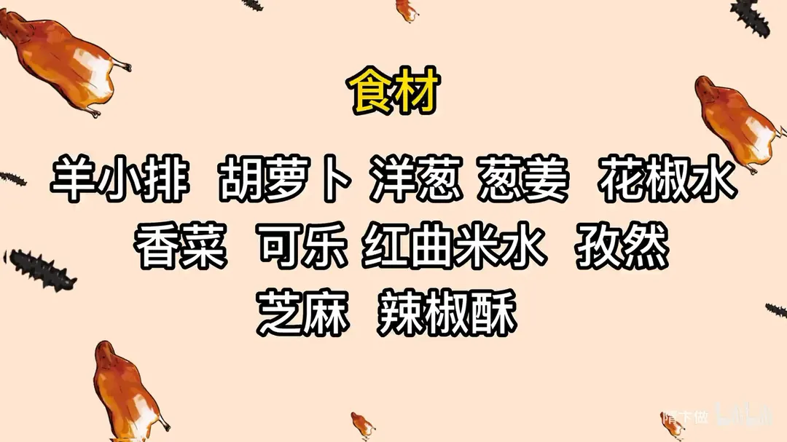
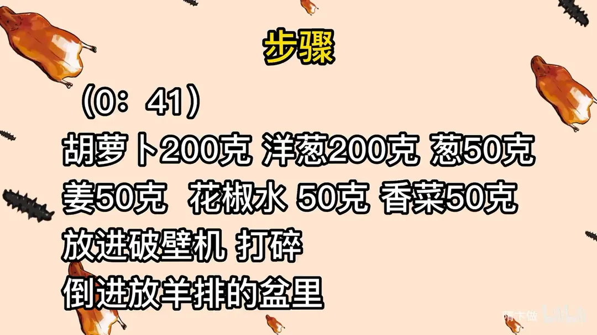
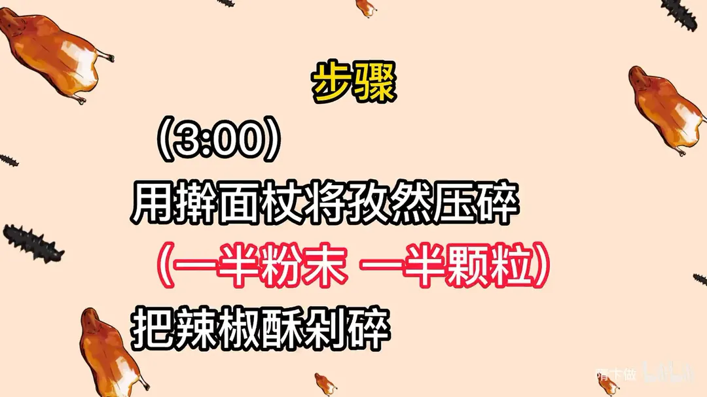
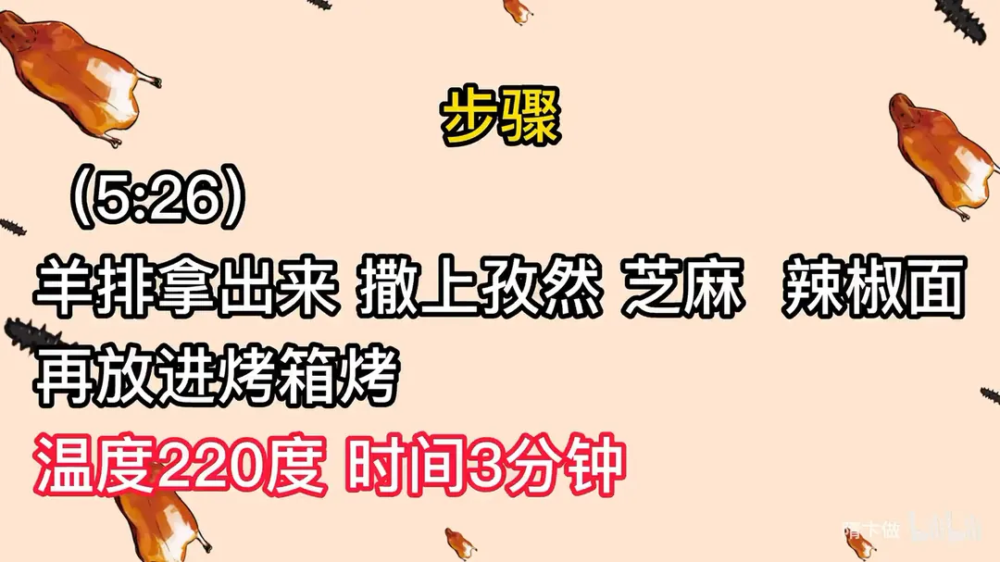
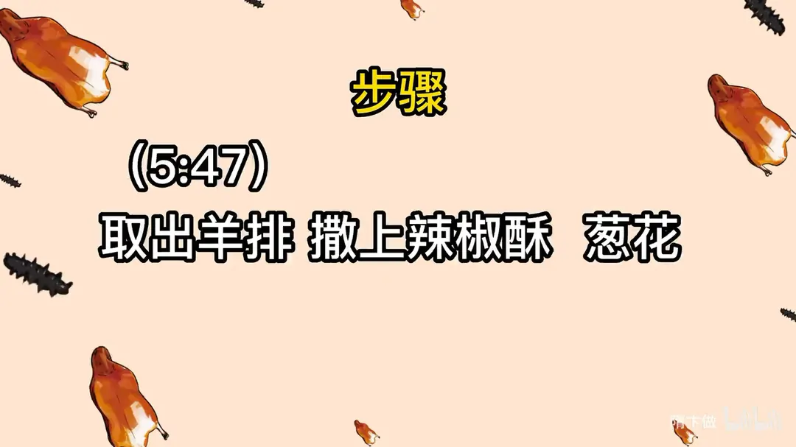

烤羊排
隋卞一做。羊小排用胡萝卜、洋葱、葱姜、香菜打成腌料，加红曲米水、30g 盐和 3 瓶可乐腌透，100 度蒸 60 分钟，再 220 度两轮烤制，撒孜然、芝麻、辣椒酥。
原视频：https://www.bilibili.com/video/BV1Qo4y1F74A
食材
羊小排、胡萝卜、洋葱 等 13 样
| 类别 | 用料 | 用量 |
|---|---|---|
| 主料 | 羊小排 | 适量 |
| 腌料 | 胡萝卜 | 200g |
| 腌料 | 洋葱 | 200g |
| 腌料 | 葱 | 50g |
| 腌料 | 姜 | 50g |
| 腌料 | 花椒水 | 50g |
| 腌料 | 香菜 | 50g |
| 腌料 | 红曲米水 | 100g（可用酱油代替） |
| 腌料 | 盐 | 30g |
| 腌料 | 可乐 | 3 瓶 |
| 干料 | 孜然 | 适量 |
| 干料 | 芝麻 | 适量 |
| 干料 | 辣椒酥 | 适量 |
步骤
- 打腌料：胡萝卜 200g、洋葱 200g、葱 50g、姜 50g、花椒水 50g、香菜 50g 放进破壁机打碎，倒进放羊排的盆里。
- 腌制：再加入 100g 红曲米水（可用酱油代替）、30g 盐、3 瓶可乐，腌制。
- 蒸制：将盆放进烤箱蒸，温度 100 度，时间 60 分钟。
- 加工干料：分别将孜然和芝麻炒熟；用擀面杖将孜然压碎，一半粉末一半颗粒；把辣椒酥剁碎。
- 改刀烤制：把蒸好的羊排改刀，上烤箱烤，温度 220 度，时间 10 分钟。
- 补料再烤：羊排拿出来，撒上孜然、芝麻、辣椒面，再放进烤箱烤，温度 220 度，时间 3 分钟。
- 出锅：取出羊排，撒上辣椒酥、葱花。
讲解要点
难度：★★☆☆☆（步骤多但都好控，难点是先蒸后烤的火候衔接和腌料汁要没过羊排）
为什么这么做
- 选 1.5kg 以下的小羊排：小羊肉嫩脂香，蒸 60 分钟就够；羊排越大越老，蒸的时间要跟着加长。
- 蔬菜打成汁腌：胡萝卜、洋葱、香菜、葱姜的香味和水分能直接渗进肉里，手剁的效果差一截。
- 红曲米水只负责上色：羊排蒸出来发白发灰不显好，红曲米（没有就用酱油）让它红亮；它本身带一点苦味，后面要用可乐盖住。
- 可乐腌是关键：可乐里的碳酸促进肉的成熟，自带焦糖帮助上色，甜味正好压住红曲米的苦。
- 盐要一次给足（30g）、腌料汁要没过羊排：底味不足出来就是「飘」的味道、没有回味；没过羊排味道才进得均匀。
- 先 100 度蒸 60 分钟，蒸完洗掉表面蔬菜渣、划刀口：蒸汽把肉焐到脱骨软糯又保住水分；蔬菜汁残留一烤就糊，划刀口调料才进得去。
- 趁热撒孜然、辣椒面再烤：刚出炉表面一层油，热的时候撒料才粘得住；复烤 2-5 分钟，油把香料「滋润」过来，香才进肉。辣椒酥留到最后撒，再烤就糊。
容易翻车
- 腌料汁没没过羊排，或者盐放少，成品就是「飘」的、没回味。
- 蒸好不清理表面的蔬菜汁直接烤，外面一层糊、里面还湿。
- 最后撒的辣椒酥如果提前放进去烤，糊味会盖过全部香气。
- 复烤时间以「表面香料被油浸透」为准，2 到 5 分钟都可以，别盯着秒表。
- 炒孜然时锅底一冒烟就得转小火，全程大火直接炒，孜然发苦。
原片尾卡





原片文案
AI 字幕校准稿
味道多好吃了吧？马上夏天了，教你们一道硬菜——老头同志秘制的烤羊排。这种口味、这种做法是我自己琢磨出来的，你在外边肯定没吃过，网上也没有人教。先来点羊排。我们挑的羊排呢都是用小羊排，大约在 1.5kg 以下的。你要是请客，选这种小羊排，它的口感会非常好，我要自己吃你就随意了。反正就老的得多煮一会儿，嫩的少煮一会儿。就为了好看，把上面那边修一下，然后把它放到盆里边。
我们需要准备点蔬菜，胡萝卜、洋葱，家里边剩两根小葱、生姜，加点花椒水，香菜加水。具体的比例不用记，最后的结尾会给大家写得清清楚楚。打碎机打碎，家里没有破壁机的，那你就拿刀剁一剁，放上水哗抓一抓，但是可能没有这个效果更好一些。把它倒进羊排里边。
煮一点红曲米水倒进去，这个是增加一个颜色，家里没有的您就放点酱油。煮出羊排白不呲咧的不好看。接下来就是秘方中的秘方了——给你保证，一罐可乐倒进去，一定要让这汁儿没过羊排。
可乐里边有碳酸，它会促进肉的成熟；而且它里边有一丝甜味，会把红曲米汁当中的一点点苦味盖过去；还有它里面有焦糖，能促进羊排上色。然后里边加盐，味道足。这底味一定要加足了，底味不足，出来羊排吃了就没有回味，就是我们常说的那个特别飘的味道。
你这么闻着，里面有蔬菜的味、花椒的味道，加上可乐的味道，很符合。然后上锅，100 度 60 分钟。
趁着羊排蒸着，咱们把这个孜然炒一下。这个孜然买回来之后，炒一下味道才香。点着火到这就行了，然后拿勺子扒拉它，锅底要冒烟的时候，就把火关小。看见了吧，这关小火了，扒一会一看锅里没有什么烟了，然后再把它开大火。同样的方法，我们来搞点芝麻。
刚炒好的孜然稍微晾一下，放在纸上，我也没有擀面杖，找个瓶子擀一擀。擀成那种半粒半粉的状态，就是有半拉颗粒的，也不用感到很细很细，然后把它倒到一个碗里边。第二个不一样就来了，这是我们上次做猪蹄用的那个辣椒酥，拿刀给它干碎，家里有打碎机也可以。
羊排到时间了，咱们看一下。没问题，看这个骨头都要抽下去了。蒸好的羊排咱们把它捞出来，捞出来以后直接放在屉上面。上面会残留一些咱们刚才打过的蔬菜汁，一定要清理一下，烤完之后的容易糊。把刀给它划一下，划个缝，它好烤、好入味，比撒料也好使。
我们进烤箱给它烤一下，220 度 10 分钟。这一步呢是要把羊排表面多余的水分烤掉，让它渗出油脂，咱们再去撒一些料。
到时间了，这色上的真漂亮。我们把这个孜然、辣椒面都撒上边。因为刚烤完的羊排上面一层油，特别容易把这个粘上，所以就趁热赶紧撒上。然后我们把它放回去再烤几分钟，因为烤 2 分钟就行了，你看油已经把上面的孜然、辣椒面都滋润过来了。
把那个辣椒酥撒上边。普普通通的烤羊排。来兄弟，那块是肥瘦最合适的，就根本带骨头都已经拿不起来了。就一点都不干，那肥肉吃的一点也不肥，里面都化了，那个瘦肉在你嘴巴里面吃的也是进去融化过了，但它还是有口感的。羊肉里面也入味了，羊肉的那种香味混合着孜然、芝麻的那种香，还有那个辣椒酥又给它加了层很复合的辣味和一点点酥脆的口感。
可乐的甜味被红曲米的那一点点苦味给遮盖了，混合了，所以你不会吃出来。里边的碳酸根本就没有什么味道，让肉基本上都给吸收了。吃到嘴巴里面是柔软的、复合的。这个方法我觉得基本上不会失败，很好吃，大家一定要给它做，超级好吃。拜拜。